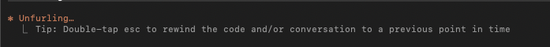
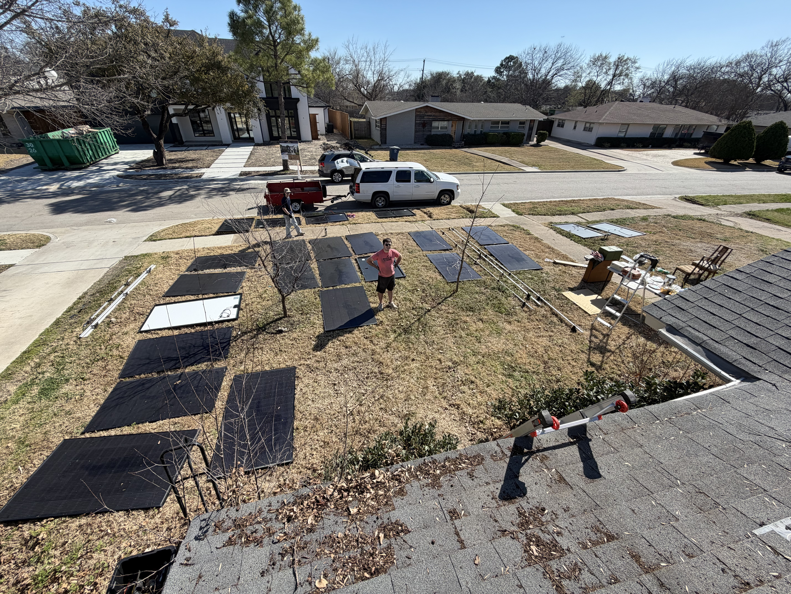
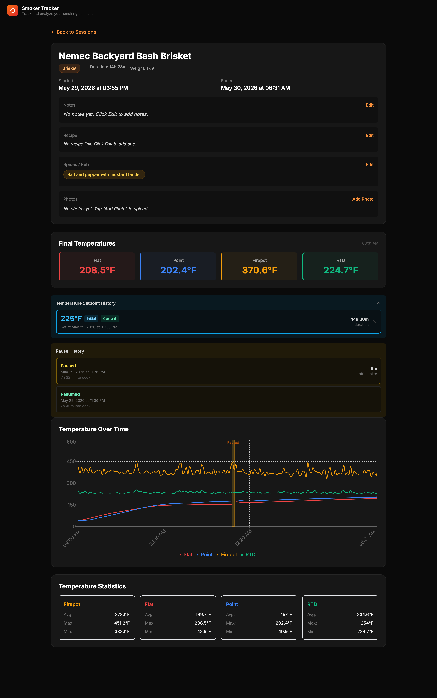
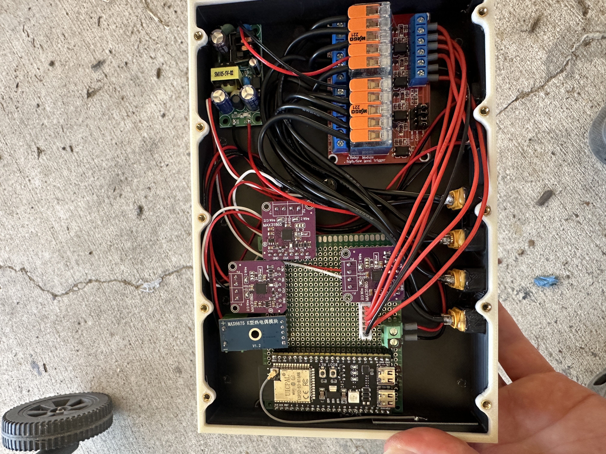
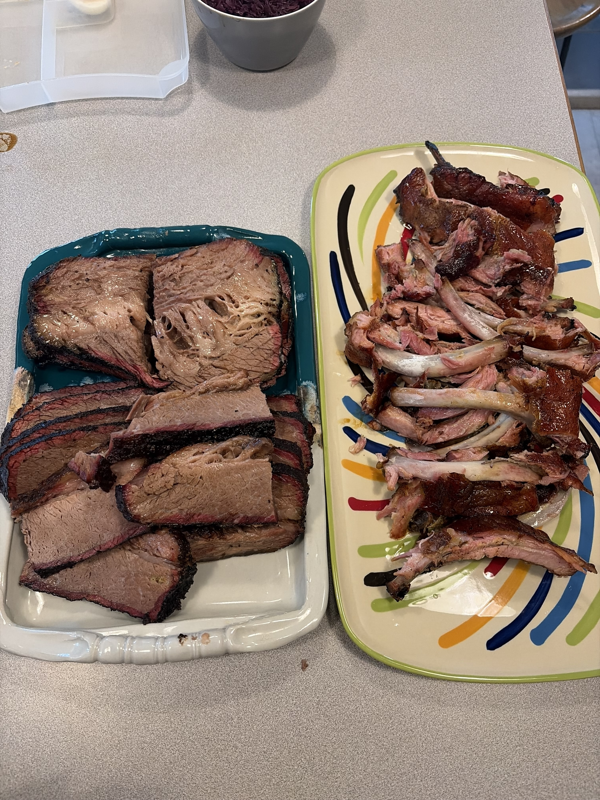
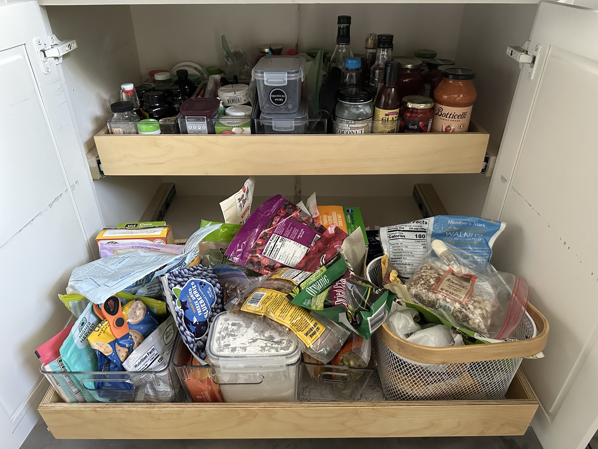
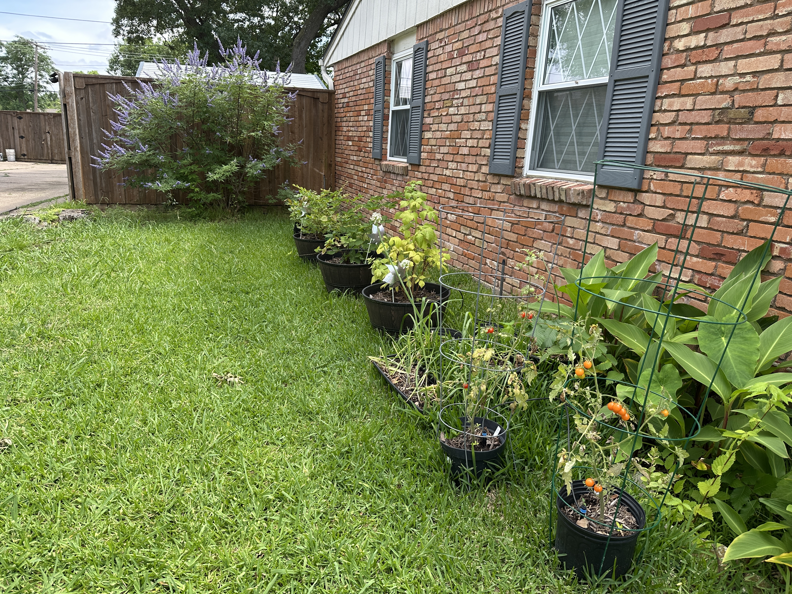
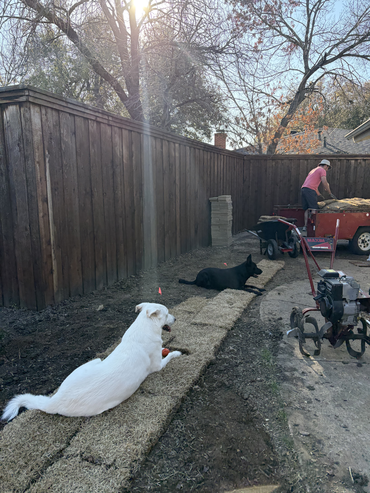
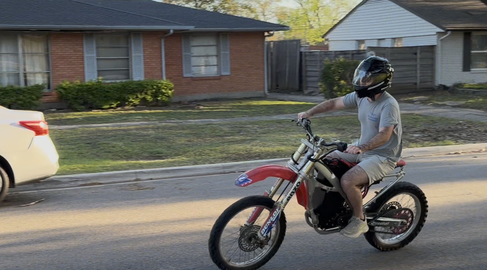
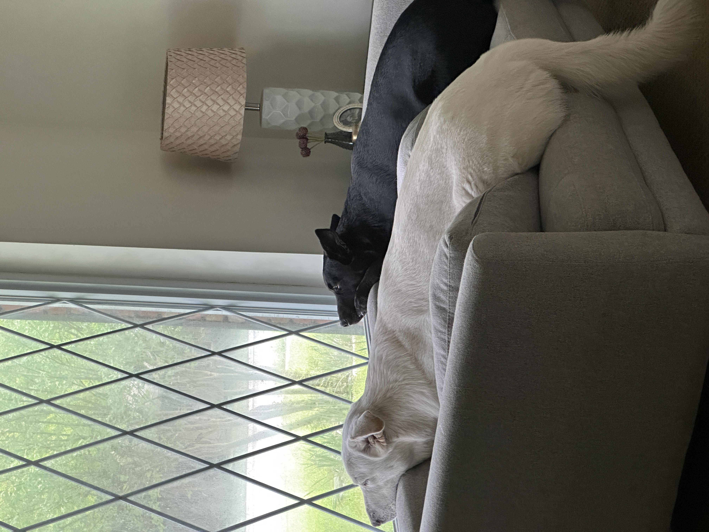

These last 3 months, I'm not gonna lie, have been a whirlwind of emotions. Excited about interviews and potential job leads, learning new technologies, messing with AI (using Claude to create an application that is useful to me, more on that later). But there have also been lots of sad times, hearing back from employers that you were not picked for the position you envisioned yourself in over weeks of interviewing.
Enough of the negativity, I would love to share what I've been up to.
Working with AI
I've been messing with AI more and more, specifically Claude (nicknamed "Clad" in our household). I've had lots of fun learning and using AI for things it's really good at (developing, testing, and integrating applications) and working with it to teach it/hold its hand in doing things it's not that amazing at YET (automations for my Home Assistant, designing a solar panel system from permit drawings to electrical diagrams).
I've also been taking the time to learn more about and use different languages and how they can be applied in these changing times in the software industry, more time learning Python, React, Java, SQL, AWS, and much more.

The solar project
With my love of both software and hardware, back in February I had the opportunity to buy a large solar panel system off a neighbor's house that was going to be demolished. Over a weekend, my dad and cousin helped take down and move all 46 solar panels (~60 lbs each), 3 batteries (300 lbs each), and lots of other hardware over to my house down the street. Since then I've sold items I have no use for and am excited to start building, getting permits, and all that jazz to put the system up on my house.

BBQ and a custom smoker controller
I've also found a love for BBQ/smoked meats. I recently got a $30 pellet smoker where the controller didn't work, I spent the time to build a custom controller with an ESP32 and other sensors and relays to control the smoker through Home Assistant. I then thought, wow, I should create a website/app that lets me track my meat smoking sessions for future reference. I then immediately thought that would be a great opportunity to use Claude to help create and integrate said application. Since then I've learned how powerful AI really is if you give it the right direction and double-check its work. If you want to take a look at the application, click HERE.



DIY around the house
For those who know me well, I'm also a big DIY home improvement guy. So while being careful with a 1-income household, my wife and I spent the time to till up and re-sod the backyard that was becoming a muddy pit for our doggies. We've also spent time adding more plants to our garden (blackberry, blueberry, and raspberry bushes). Planning and CAD-ing some cabinets to add into our kitchen, and making some custom pull-out drawers for our shelved cabinets so you can actually reach all the stuff in the very back you never knew was there.



3D printing, CAD, and what might come next
I currently have a 3D printer and have had one in some capacity since 8th grade. I've been creating little things around the house, random tidbits that make our life better. I've also taken an interest in CAD and CAM and am thinking about getting into creating products with a CNC mill/lathe, whether as a fun hobby or a 5pm-to-9pm startup.
Electric Dirt Bike
Over the last year I have been building an electric dirt bike. I started with just a frame and a blown motor, and have since designed and built a battery pack, motor mount, and everything else needed to get the bike running. There have been lots of small things holding me back from taking the first test ride, but it was awesome to finally be able to test out something that has taken so long to complete! There's still plenty to iron out, but I'm super happy to have a new vehicle to take me to play tennis with my dad or run quick errands on.

Dog Dad
Arguably the best part about being home is being able to spend more time with my two dogs, Charlie and Jet.

As many of my friends and family have said, the right job will come soon and brighter times are ahead. I pray that is true for myself as well as my past colleagues who are currently in the same boat.